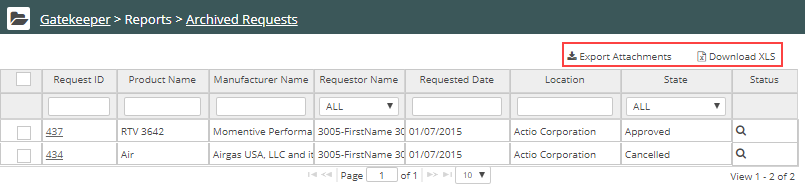

The Archived Requests Report shows all archived product requests. Archived Reports are available to Administrators only.
To run a Report:
Click the Gatekeeper Main menu. In the Gatekeeper Navigation panel, under Reports, select Archived Requests.
The report displays. Click Download XLS to download the report in Excel format.

You can also download the attachments for a request (including an original SDS attached to the request).
To download attachments:
Select the checkbox for a request and click Export Attachments.
Only one item at a time may be selected for export.
Archived Requests report columns:
Request ID: Clicking the ID number displays the request form.
Product Name: The product name as stated in the Safety Data Sheet (SDS).
Manufacturer Name: The manufacturer's name.
Requestor: The name of the requestor
Requested Date: The date you requested the product.
Location: The location for which the product was requested.
State: The state of the request: Not Submitted (created and saved for future submission), Awaiting Approval, Approved, and Declined.
Status: Clicking the icon displays a history table of the request.